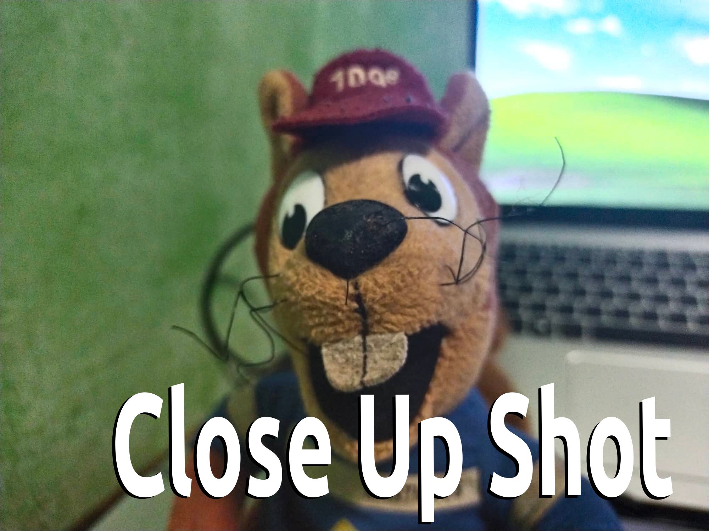
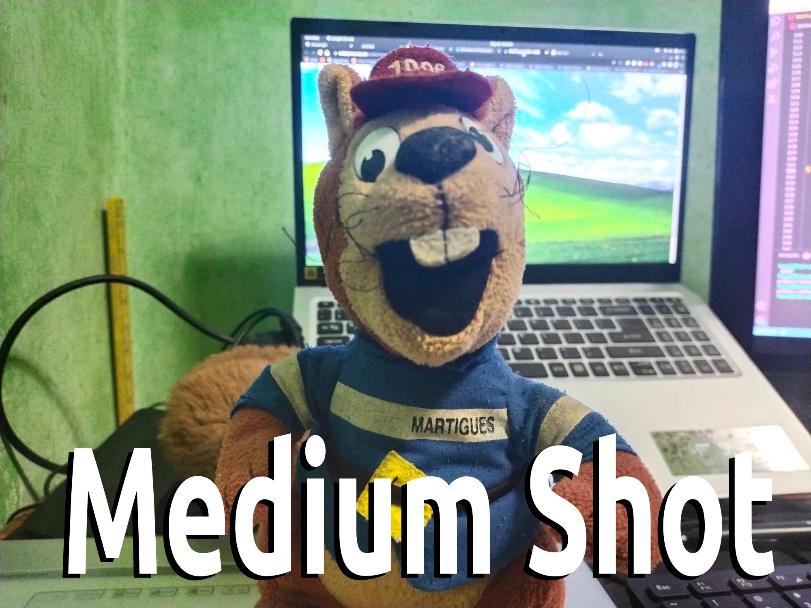
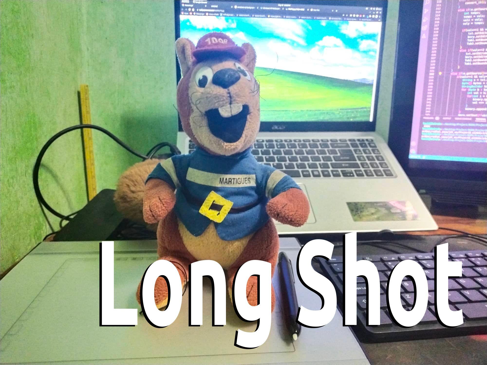

The camera shot that I used was Close Up Shot
B. Directions: Take a picture or a video of your preferred subject (example: Objects, Person, Pet) With Different Camera Angles. Send it to me through messenger and write a brief description on what camera angle or camera shot you used.

The camera shot that I used was Close Up Shot

The camera shot that I used was Medium Shot

The camera shot that I used was Long Shot